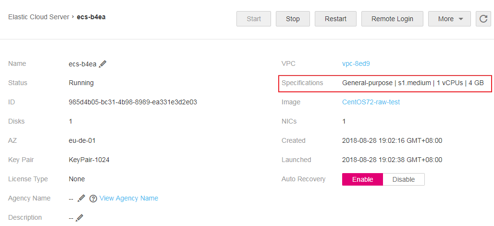

Scenarios
If ECS specifications do not meet service requirements, you can modify the ECS specifications, including vCPUs and memory. Certain ECSs allow you to change their types when you modify their specifications.
- For instructions about how to modify the specifications of other ECSs, for example, between KVM ECSs, see this section.
Background
To obtain the virtualization type of an ECS, perform the following operations:
- On the page providing details about the ECS, view the ECS specifications.Figure 1 Viewing ECS specifications
 - Check the specifications tables in ECS Types for the virtualization type.
Notes
- If ECS specifications are downgraded, the ECS performance will deteriorate.
- Certain ECS types do not support specifications modification currently. For details about available ECS types as well as their functions and usage, see "Notes" in ECS Types.
- When the disk status is Expanding, you are not allowed to modify the specifications of the ECS where the disk is attached.
- Before modifying the specifications of a Windows ECS, modify the SAN policy by following the instructions provided in Why Does a Disk Attached to a Windows ECS Go Offline? to prevent disks from going offline after the specifications are modified.
- Before modifying specifications, make sure that the ECS has been stopped.
Step 1: Modify Specifications
- Log in to the management console.
- Click
 in the upper left corner and select your region and project.
in the upper left corner and select your region and project. - Under Computing, click Elastic Cloud Server.
- On the Elastic Cloud Server page, view the status of the target ECS.
If the ECS is not in Stopped state, click More in the Operation column and select Stop.
- Click More in the Operation column and select Modify Specifications.
The Modify ECS Specifications page is displayed.
- Select the new ECS type, vCPUs, and memory as prompted.
- (Optional) Set DeH.
If the ECS is created on a DeH, the system allows you to change the DeH.
To do so, select the target DeH from the drop-down list. If no DeH is available in the drop-down list, remaining DeH resources are insufficient and cannot be used to create the ECS with specifications modified.
- Click Next.
- On the Modify ECS Specifications page, confirm the modified vCPU and memory specifications and click Submit.
- Check whether the specifications have been modified.
After modifying the specifications, you can check whether the specifications have been modified in Failures.
- Check whether Failures is displayed on the management console. For details, see Viewing Failures.
- If yes, go to step 10.b.
- If no, the specifications have been modified.
- Click Failures. Then, in the Failures dialog box, click Operation Failures and check whether the task is contained in the list by Name/ID, Operated At, or Task.
- If yes, the specifications modification failed. See Follow-up Procedure for failure causes.
- If no, the specifications have been modified.
- Check whether Failures is displayed on the management console. For details, see Viewing Failures.
Step 2: Check Disk Attachment
After specifications are modified, disk attachment may fail. Therefore, check disk attachment after specifications modification. If disks are properly attached, the specifications modification is successful.
- Windows ECS
For details, see Why Do the Disks of a Windows ECS Go Offline After I Modify the ECS Specifications?
- Linux ECS
For details, see Why Does the Disk Attachment of a Linux ECS Fail After I Modify the ECS Specifications?
Follow-up Procedure
Perform the following operations in the event of a specifications modification failure:
- Log in to the management console.
- Under Management & Deployment, click Cloud Trace Service.
- In the navigation pane on the left, choose Trace List.
- In the Trace Name column, locate the resizeServer event by resource ID.
The resource ID is the ID of the ECS on which the specifications modification failed.
- Click View Trace in the Operation column to view the failure cause.
If the fault cannot be rectified based on logs, contact customer service.